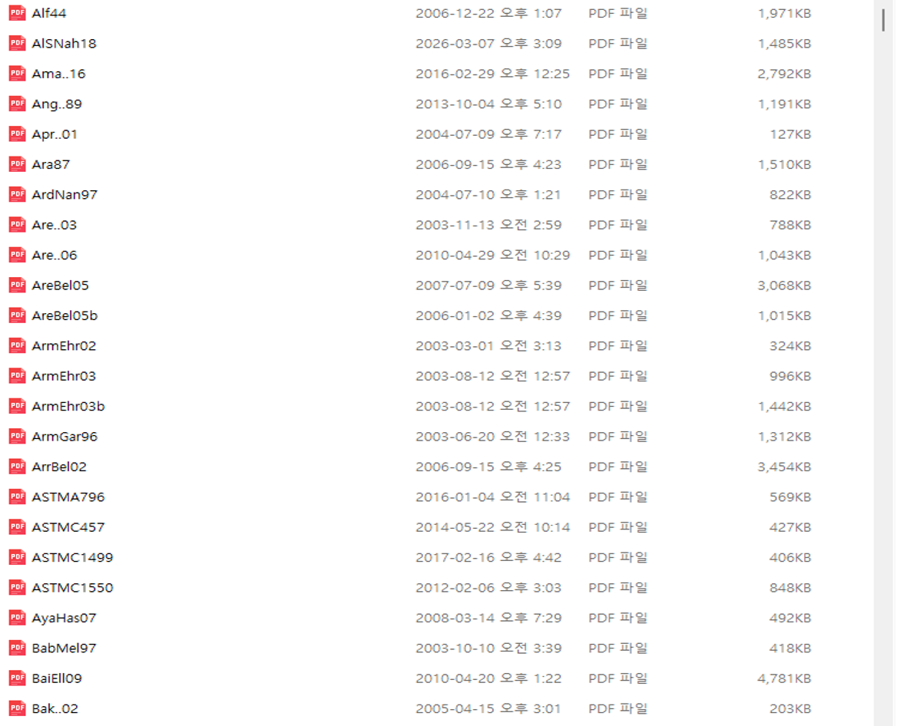

How I Built a Reusable LaTeX System for Research Writing
A long-term workflow built around a stable template, shared packages and commands, one identifier for every reference, and reusable technical content
For me, LaTeX is not simply a typesetting program.
It is the infrastructure of research writing.
Over many years of writing technical papers, equations, reports, lectures, and presentations, I gradually developed a system in which the scientific content is separated from the formatting required by a particular journal or document type.
The basic idea is simple:
Write the technical content in a stable system. Change the presentation only when the purpose changes.
This distinction has become increasingly important to me because individual papers come and go, journals have different formats, and presentation styles continue to change. The underlying research material, however, should remain reusable.
My system therefore has several persistent components:
template.tex
↓
zipackage.tex + zicommand.tex
↓
paper-specific manuscript
↓
figures and equations
↓
BibTeX citations
↓
reference.bib
↓
keyed source PDFsThe same technical material can later be converted into a publisher’s journal format, reused in another paper, or reorganized into a Beamer presentation.
The important point is not any individual file.
It is the system connecting them.
Why I do not begin with a journal template
When starting a research paper, I normally do not begin by adapting my thinking to the formatting rules of the target journal.
Instead, I begin from my own template.tex.
This gives me a familiar and stable writing environment. The manuscript develops around the research question, equations, figures, references, results, and discussion rather than around the visual style of a publisher.
This creates a useful separation:
scientific writing
≠
journal formattingThe scientific paper should first become correct, coherent, and complete as a technical document.
Only later do I change the styling for the journal of choice.
That may involve changing:
- the document class,
- front matter,
- title and author formatting,
- section styles,
- bibliography style,
- figure placement rules,
- table formatting,
- supplementary-material conventions,
- or publisher-specific commands.
The research content should not have to be rebuilt simply because the journal changes.
This is one of the main reasons I prefer a personal LaTeX writing environment.
The manuscript changes from paper to paper. The research-writing infrastructure does not.
My starting point: template.tex
Every new manuscript begins from a reusable template.
The purpose of template.tex is not to contain the scientific content of a particular paper. Its role is to establish the environment in which that content will be written.
A typical starting structure defines the locations of common resources, loads my shared packages and commands, establishes the local figure directory, and connects the manuscript to the master bibliography.
Conceptually, the template does something like this:
% common paths
\newcommand{\rootpath}{...}
\newcommand{\commonpath}{...}
% shared infrastructure
\input{\commonpath/zipackage.tex}
\input{\commonpath/zicommand.tex}
% local figures
\graphicspath{{./}}
% manuscript begins here
\begin{document}
...
\bibliography{.../reference}
\end{document}The exact path definitions can change with the computer or folder structure, but the principle remains the same.
A new paper should not require me to reconstruct my entire LaTeX environment.
I start with the infrastructure already in place and concentrate on the research.
This also makes the beginning of a new project much less arbitrary. I already know where equations, figures, references, commands, and shared settings belong.
One master bibliography: reference.bib
I also maintain one large BibTeX database rather than starting a new bibliography from zero for each paper.
The file, reference.bib, has accumulated over many years.
It contains ordinary bibliographic information, but over time it has become much more than a mechanism for producing a reference list.
The database includes such information as:
- authors,
- titles,
- journals,
- years,
- volumes and pages,
- DOI and URL information where available,
- journal abbreviations,
- subject keywords,
- and in some entries additional notes or abstracts.
I also use journal @STRING definitions for recurring abbreviations such as
CMAME
IJNME
IJSS
JEM
JSE
OE
...and subject codes accumulated around my research areas, for example:
FR fracture mechanics
PL plasticity
XF XFEM
FS floating structures / hydromechanics
FAT fatigue
HE hydroelasticity
...As the database grows, it becomes a record of the literature that has accompanied my research career.
For this reason, I no longer regard reference.bib simply as a bibliography generator.
It is a personal research-memory database.
One identifier for the citation, metadata, and PDF
The most important part of my reference system is the relationship between BibTeX and the original PDF files.
I keep the source papers themselves in a large reference archive.
The rule is simple:
The PDF filename is identical to the BibTeX key.
Suppose I assign a paper the key
AlSNah18I cite it in LaTeX as
\cite{AlSNah18}The corresponding entry in reference.bib begins with
@article{AlSNah18,
...
}and the original source paper is stored as
AlSNah18.pdfTherefore the same identifier connects three different things:
\cite{AlSNah18}
↕
@article{AlSNah18,...}
↕
AlSNah18.pdfor, more generally,
citation
↕
bibliographic metadata
↕
original source documentThis is one of the most useful habits I have developed.

Figure Figure 1 shows part of the actual archive.
The filenames are not arbitrary descriptions of the papers. They are the same identifiers used in BibTeX.
This means that when I encounter a citation key in an old manuscript, I can immediately find the corresponding source PDF.
The key is therefore not only a citation label.
It is the permanent identity of the reference within my research system.
Give every reference one identifier, and use that same identifier everywhere.
How I add a new reference
When I obtain a new paper, I add it to the system through a consistent sequence.
1. Obtain the paper
2. Verify or create the BibTeX metadata
3. Assign the BibTeX key
4. Rename the PDF using exactly the same key
5. Store the PDF in the reference archive
6. Cite the paper using that same keyFor example:
BibTeX key AlSNah18
BibTeX record @article{AlSNah18,...}
PDF file AlSNah18.pdf
LaTeX citation \cite{AlSNah18}Nothing has to be translated from one naming system into another.
That becomes increasingly important after the archive contains hundreds or thousands of papers.
A descriptive filename may be meaningful when a paper is first downloaded, but years later it may be difficult to remember exactly how it was named.
A permanent citation key solves that problem.
The manuscript itself tells me how to retrieve the original paper.
How I start a new manuscript
With the persistent infrastructure already established, beginning a new research paper becomes systematic.
My workflow is approximately:
1. Start from template.tex
2. Define the root and common paths
3. Load zipackage.tex
4. Load zicommand.tex
5. Set the local figure directory
6. Write the paper-specific manuscript
7. Store figures with the manuscript
8. Cite literature using keys from reference.bib
9. Retrieve source PDFs using those same keys
10. Compile and revise in the stable environment
11. Adapt the finished manuscript to the target journal templateThe important distinction is between what belongs to a particular paper and what belongs to my research-writing infrastructure.
Paper-specific material includes:
manuscript
figures
tables
calculations
results
journal-specific filesThe persistent layer includes:
template.tex
zipackage.tex
zicommand.tex
reference.bib
References/*.pdfThis separation is what makes the workflow reusable.
The journal template comes later
Eventually, a manuscript must satisfy the requirements of a specific journal.
At that point I may have to move the scientific content into a publisher’s class file or template.
But by then the main intellectual work has already been done.
The equations exist.
The figures exist.
The references exist.
The notation is consistent.
The argument has been developed.
The conversion is therefore primarily a change in presentation and submission structure rather than a reconstruction of the research paper.
Conceptually:
my stable manuscript
↓
scientific content completed
↓
target journal selected
↓
publisher class/template applied
↓
final submissionThis way of working is especially useful when the target journal changes during the publication process.
The research should not be locked into the visual assumptions of the first journal considered.
LaTeX content is reusable beyond papers
Another important benefit of this system is that LaTeX content is not limited to a single journal manuscript.
A research project produces many reusable objects:
- equations,
- symbols,
- derivations,
- figures,
- TikZ drawings,
- tables,
- references,
- explanations,
- and technical terminology.
Because these objects are stored as structured source material, they can be reorganized for other purposes.
One of the clearest examples is Beamer.
Material developed for a paper can later be reused in a presentation:
research idea
↓
LaTeX equations + figures + references
↓
journal manuscript
│
├──→ another journal format
│
├──→ conference paper
│
├──→ Beamer presentation
│
├──→ lecture material
│
└──→ later technical writingThe point is not simply that Beamer can make presentation slides.
The more important point is that the same technical source can serve more than one communication purpose.
An equation written carefully for a paper does not need to be reconstructed in PowerPoint.
A TikZ figure can often be reused.
Technical notation remains the same.
Bibliographic keys remain the same.
The research content can therefore move from one document form to another with much less duplication.
This is where LaTeX becomes more than a typesetting tool.
It becomes a reusable representation of technical knowledge.
Why the system becomes more valuable with time
The value of this approach is modest when writing the first paper.
It becomes much larger after many papers.
A shared command file may initially save only a few keystrokes.
After years of work, it encodes a substantial part of one’s technical notation.
A BibTeX database may initially contain a few dozen references.
After decades, it becomes a map of the literature encountered throughout a research career.
A PDF naming rule may initially look unnecessarily strict.
After thousands of citations, it provides a direct connection between old manuscripts and their original sources.
This leads to an important difference between ordinary document organization and research infrastructure.
individual papers are temporary
research infrastructure is persistentEach new project uses the infrastructure, but it also contributes to it.
New commands may be added.
New packages may become necessary.
New references enter the bibliography and PDF archive.
New figures and explanations may later become teaching material.
The system therefore grows with the research itself.
A foundation for a future research knowledge system
There is another consequence that has become increasingly interesting with the development of AI-assisted research tools.
The citation key already connects several forms of information:
BibTeX metadata
+
source PDF
+
topic keywords
+
manuscript citationsThat structure could support future tools for:
- semantic literature search,
- citation verification,
- topic clustering,
- literature maps,
- retrieval-augmented generation,
- source-grounded AI writing,
- and reconstruction of one’s own research history.
I do not yet regard this as the primary reason for maintaining the system.
The system was developed to solve a much more basic problem: how to write technical research efficiently and consistently over a long period.
But a well-structured research archive has consequences that extend beyond LaTeX itself.
Once references, source documents, notation, and manuscripts already have persistent identities and relationships, they are much easier to connect to new computational tools.
The main principle
Looking back, the most important feature of my LaTeX workflow is not any package, command, template, or bibliography style.
It is the decision to treat research writing as a persistent system rather than a sequence of isolated documents.
My papers change.
My research topics evolve.
Journal formats change.
Presentation formats change.
But the underlying infrastructure continues to accumulate value.
That is why I would summarize the entire workflow in one principle:
Do not organize research around individual documents. Build a persistent writing system from which individual documents are produced.